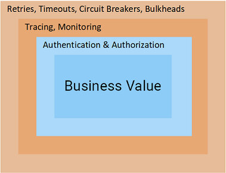
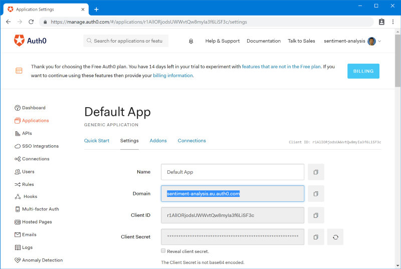
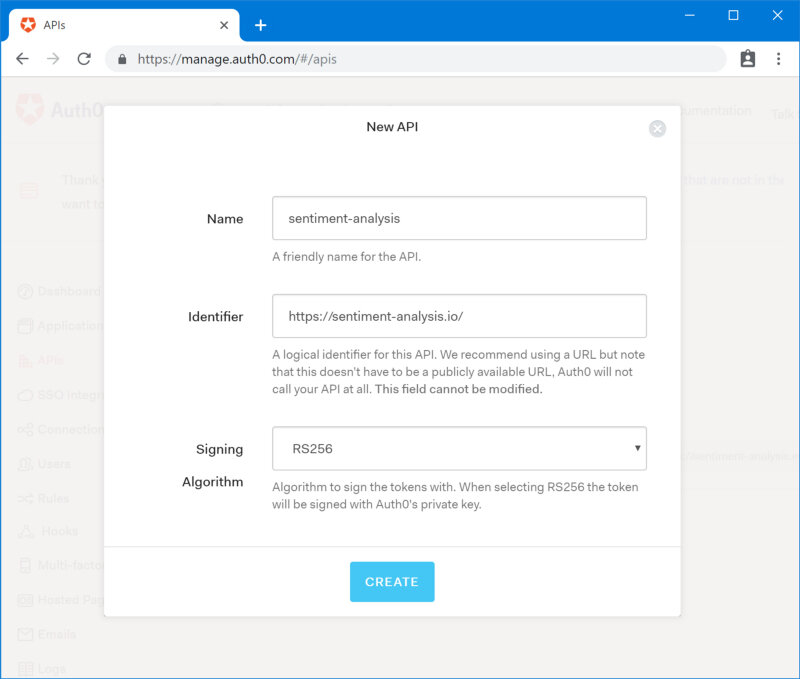
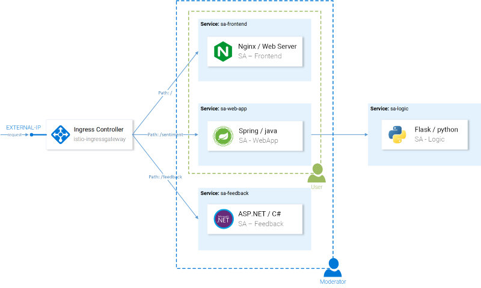
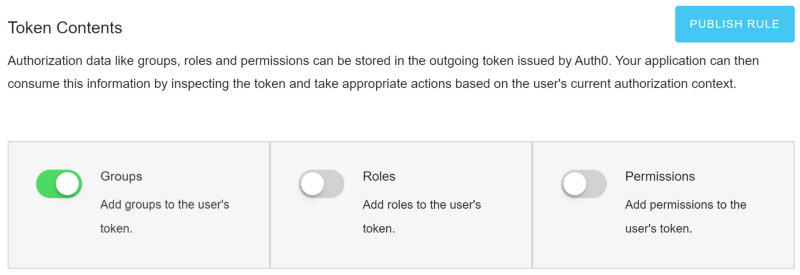
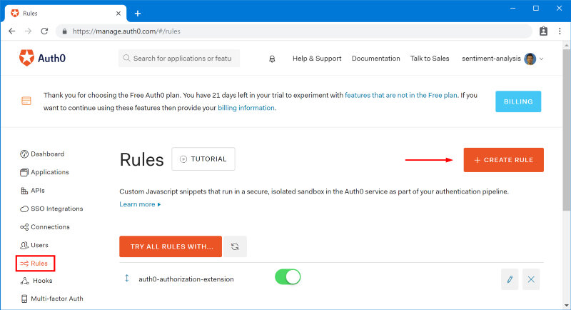

本文为翻译文章，点击查看原文。
这篇文章是使用Istio打造微服务的第二部分，如果没有看第一篇的话，请先看第一部分内容，因为这篇博客是以第一篇博客为基础进行进一步深入的。
在第一篇文章中，我们建立了一个Kubernetes集群，并且在上面部署了 Istio 和示例微服务应用程序“Sentiment Analysis”，用来展示Istio的功能。
使用Istio后，我们可以把应用层中的重试、超时、断路器、跟踪、监控内容抛弃，以保持我们的服务应用保持在一个简单专注的微型状态，（如图1所示）。此外，我们还启用了高级测试和部署技术，如A/B测试，镜像和金丝雀部署。

在本文中，我们将带领读者使用Istio来处理身份验证和授权！
Istio中的认证和授权
我永远不会相信认证和授权会让我感到兴奋！但是Istio可以让这个话题变得有趣，这种情况下难道你不感到兴奋么？
答案很简单： Istio将这些职责从我们的服务下沉到Envoy代理，当请求到达我们的服务时，它们已经经过身份验证和授权，我们只需编写提供业务价值的代码。
听起来不错？ 让我们去瞧瞧吧！
使用Auth0进行身份验证
作为身份和访问管理服务器，我们将使用Auth0，它有一个试用选项，直观易用，我只是喜欢它！ 也就是说，相同的原则可以用于任何 OpenID Connect实现， 如KeyCloak、IdentityServer等等。
要开始使用，请使用您的帐户导航到Auth0 Portal，在Applications> Default App下创建租户并选择Domain，如下图所示：

更新文件 resource-manifests/istio/security/auth-policy.yaml 以使用您的域名：
apiVersion: authentication.istio.io/v1alpha1
kind: Policy
metadata:
name: auth-policy
spec:
targets:
- name: sa-web-app
- name: sa-feedback
origins:
- jwt:
issuer: "https://{YOUR_DOMAIN}/"
jwksUri: "https://{YOUR_DOMAIN}/.well-known/jwks.json"
principalBinding: USE_ORIGIN
有了这个资源，pilot会配置envoy在将请求转发给服务sa-web-app 和 sa-feedback之前对其进行身份验证。同时，这个策略不会应用到运行sa-frontend服务的envoy上，这使得我们能够未经认证就访问前端服务。要应用这些策略，请执行以下命令：
$ kubectl apply -f resource-manifests/istio/security/auth-policy.yaml
policy.authentication.istio.io "auth-policy" created
返回页面并发出请求，您将看到它将以401 Unauthorized结束，现在让我们从前端转发用户以使用Auth0进行身份验证。
使用Auth0验证请求
要验证最终用户的请求，我们需要在Auth0中创建一个API，表示经过身份验证的服务，即：评论，详细信息和评级。要创建API，请导航到 Auth0 Portal > API > Create API ，如下图所示。

这里的重要信息是稍后在脚本中使用的标识符：
- 观众： {YOUR_AUDIENCE}
其余所需的详细信息位于Auth0 Portal中的 Applications 下 ，然后选择自动创建的与API同名的 Test Application。
请记下：
- 域名： {YOUR_DOMAIN}
- 客户ID： {YOUR_CLIENT_ID}
在Test Application中向下滚动到Allowed Callback URLs文本位置，在此字段中我们指定请求在完成身份验证后应被转发到的目的URL。在我们的示例中，它是：
[http://{EXTERNAL_IP}/callback](http://%7BEXTERNAL_IP%7D/callback)
向Allowed Logout URLs添加以下URL：
[http://{EXTERNAL_IP}/logout](http://%7BEXTERNAL_IP%7D/logout)
接下来让我们开始处理前端。
更新前端
检出 [istio-mastery] 存储库中的auth0 分支。在此分支中，前端包含代码更改以将用户转发到Auth0进行身份验证，并在对其他服务的请求中使用JWT令牌，如下所示：
analyzeSentence() {
fetch('/sentiment', {
method: 'POST',
headers: {
'Content-Type': 'application/json',
'Authorization': `Bearer ${auth.getAccessToken()}` // Access Token
},
body: JSON.stringify({ sentence: this.textField.getValue() })
})
.then(response => response.json())
.then(data => this.setState(data));
}
为了更新前端以使用你的租户的详细信息，请导航到该文件 sa-frontend/src/services/Auth.js 并使用我们之前记下的值替换以下值：
const Config = {
clientID: '{YOUR_CLIENT_ID}',
domain:'{YOUR_DOMAIN}',
audience: '{YOUR_AUDIENCE}',
ingressIP: '{EXTERNAL_IP}' // Used to redirect after authentication
}
应用程序已准备就绪，请在下面的命令中指定docker用户ID，然后构建并部署：
$ docker build -f sa-frontend/Dockerfile \
-t $DOCKER_USER_ID/sentiment-analysis-frontend:istio-auth0 \
sa-frontend
$ docker push $DOCKER_USER_ID/sentiment-analysis-frontend:istio-auth0
$ kubectl set image deployment/sa-frontend \
sa-frontend=$DOCKER_USER_ID/sentiment-analysis-frontend:istio-auth0
试一试应用吧！ 您将被转发到Auth0，在那里您必须登录（或注册），然后跳转回原页面，以后就可以发出经过身份验证的请求了。同时，如果您尝试使用早期的curl命令，您将获得401状态代码，表明该请求是未授权的。
让我们进行下一步，授权请求。
使用Auth0授权
身份验证使我们能够知道用户是谁，但我们需要授权才能知道他们可以访问的内容。Istio也为此提供了工具！
作为示例，我们将创建两组用户（如图24所示）：
- 用户 ：只能访问SA-WebApp和SA-Frontend服务。
- 版主 ：可以访问所有三项服务。

要创建用户组，我们将使用Auth0授权扩展，然后使用Istio，我们将为他们提供不同级别的访问权限。
安装和配置Auth0授权
在Auth0门户中，导航到Extensions并安装“Auth0 Authorization”扩展。安装完成后，导航到授权扩展并通过单击右上角的租户并选择菜单选项“配置”进行配置。启用组，然后单击 发布规则 按钮。

创建组
在授权扩展中，导航到 Groups 并创建Moderators组。同时，我们会将所有经过身份验证的用户视为常规用户，因此无需创建其他组。
选择Moderators组，然后单击添加成员，添加您的主帐户。保留一些没有任何组的用户，以验证是否禁止访问。（您可以在Auth0 Portal>用户>创建用户中手动注册新用户）
将组声明添加到访问令牌
用户将添加到组中，但此信息不会反映在访问令牌中。为了保持OpenID Connect符合要求并同时返回组，我们需要向令牌添加自定义命名空间声明。这可以使用Auth0规则来完成。
要在Auth0 Portal中创建规则，请导航到规则，单击“创建规则”并 从模板中 选择一个 空规则。

粘贴下面的代码并保存名为“添加组声明”的新规则。
function (user, context, callback) {
context.accessToken['https://sa.io/group'] = user.groups[0];
return callback(null, user, context);
}
注意： 此代码选择授权扩展中定义的第一个用户组，并将其作为自定义命名空间声明添加到访问令牌中。
返回 规则页面 ，确认您按此顺序拥有两个角色：
- auth0授权扩展
- 添加组声明
顺序很重要，因为 **auth0-authorization-extension** 规则会异步检索组字段 ，然后由第二个规则将其添加为命名空间声明，从而产生以下访问令牌：
{
"https://sa.io/group": "Moderators",
"iss": "https://sentiment-analysis.eu.auth0.com/",
"sub": "google-oauth2|196405271625531691872"
// [shortened for brevity]
}
现在，我们必须通过从https://sa.io/group返回的访问令牌中的声明中提取组来配置Envoy代理以验证用户访问权限。这是下一节的主题，让我们继续前进。
在Istio中配置授权
要获得授权，我们需要为Istio启用RBAC。为此，请将以下配置应用于Mesh：
apiVersion: "rbac.istio.io/v1alpha1"
kind: RbacConfig
metadata:
name: default
spec:
mode: 'ON_WITH_INCLUSION' # 1
inclusion:
services: # 2
- "sa-frontend.default.svc.cluster.local"
- "sa-web-app.default.svc.cluster.local"
- "sa-feedback.default.svc.cluster.local"
- 仅为“包含”字段中指定的服务和/或命名空间启用RBAC。
- 包括指定的服务列表。
通过执行以下命令应用配置：
$ kubectl apply -f resource-manifests/istio/security/enable-rbac.yaml
rbacconfig.rbac.istio.io/default created
现在，所有服务都需要基于角色的访问控制，换句话说，对所有服务的访问都会被拒绝，并响应“RBAC: access denied”。启用对授权用户的访问权限将成为下一节的主题。
配置常规用户访问
所有用户都应该能够访问 SA-Frontend 和 SA-WebApp 服务，这是通过以下Istio的资源实现的：
- ServiceRole： 指定用户拥有的权限
- ServiceRoleBinding： 指定ServiceRole应用于谁。
对于普通用户，我们将允许访问指定的服务：
apiVersion: "rbac.istio.io/v1alpha1"
kind: ServiceRole
metadata:
name: regular-user
namespace: default
spec:
rules:
- services:
- "sa-frontend.default.svc.cluster.local"
- "sa-web-app.default.svc.cluster.local"
paths: ["*"]
methods: ["*"]
使用 常规用户绑定， 我们将ServiceRole应用于我们页面的所有访问者：
哦! 所有用户这意味着未经身份验证的用户可以使用SA WebApp吗？ 不，该策略仍将检查JWT令牌的有效性。😉
应用配置：
$ kubectl apply -f resource-manifests/istio/security/user-role.yaml
servicerole.rbac.istio.io/regular-user created
servicerolebinding.rbac.istio.io/regular-user-binding created
配置版主用户访问权限
对于我们的版主，我们希望启用对所有服务的访问：
apiVersion: "rbac.istio.io/v1alpha1"
kind: ServiceRole
metadata:
name: mod-user
namespace: default
spec:
rules:
- services: ["*"]
paths: ["*"]
methods: ["*"]
但我们只想将其绑定到Access Token声明 https://sa.io/group 等于Moderators值的用户。
apiVersion: "rbac.istio.io/v1alpha1"
kind: ServiceRoleBinding
metadata:
name: mod-user-binding
namespace: default
spec:
subjects:
- properties:
request.auth.claims[https://sa.io/group]: "Moderators"
roleRef:
kind: ServiceRole
name: "mod-user"
要应用配置，请执行：
$ kubectl apply -f resource-manifests/istio/security/mod-role.yaml
servicerole.rbac.istio.io/mod-user created
servicerolebinding.rbac.istio.io/mod-user-binding created
由于Envoy中的缓存，授权规则可能需要几分钟才能生效，但在此之后，您将能够验证用户和版主具有不同的访问级别。
第2部分 - 摘要
您是否真的见过任何更简单，零工作的可扩展和安全的身份验证和授权概念？
仅使用三个Istio资源（RbacConfig，ServiceRole和ServiceRoleBinding），我们可以通过细粒度控制对最终用户访问我们服务进行身份验证和授权。
此外，我们将这些问题从我们的服务中转移到我们的Envoy：
- 减少可能出现安全问题和漏洞的样板代码，
- 减少因为忘记标记注解而暴露服务端点的愚蠢状况。
- 每次添加新角色或权限时，都会消除更新所有服务的连锁效应。
- 保持简单，安全和快速地添加新服务。
结论
Istio 使您的团队能够再次将资源集中在提供商业价值上，而不需要为服务的周边任务进行处理，让微服务回归“微型”的本质。
本文为您提供了在实际项目中开始使用Istio的知识和实践。
借此机会，我很感谢你加入我的这次Istio探索之旅，这肯定不容易，你坚持下去就已经很棒了。我十分希望在下面的评论中看到您的想法，你可以随时在 Twitter 或我的主页 rinormaloku.com 上与我联系。